História e Requinte
A casa começou como construção rural em granito, cresceu no século XVIII até à forma que tem hoje, e foi depois adaptada pelo Monsenhor António Pinto d'Abreu para servir de colónia de férias de verão aos alunos e professores do colégio Vasco da Gama, de Lisboa.
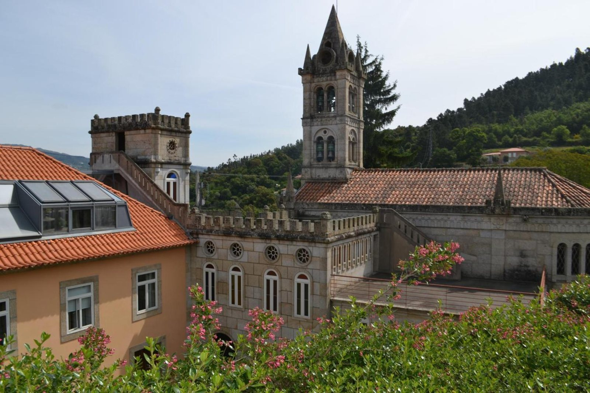
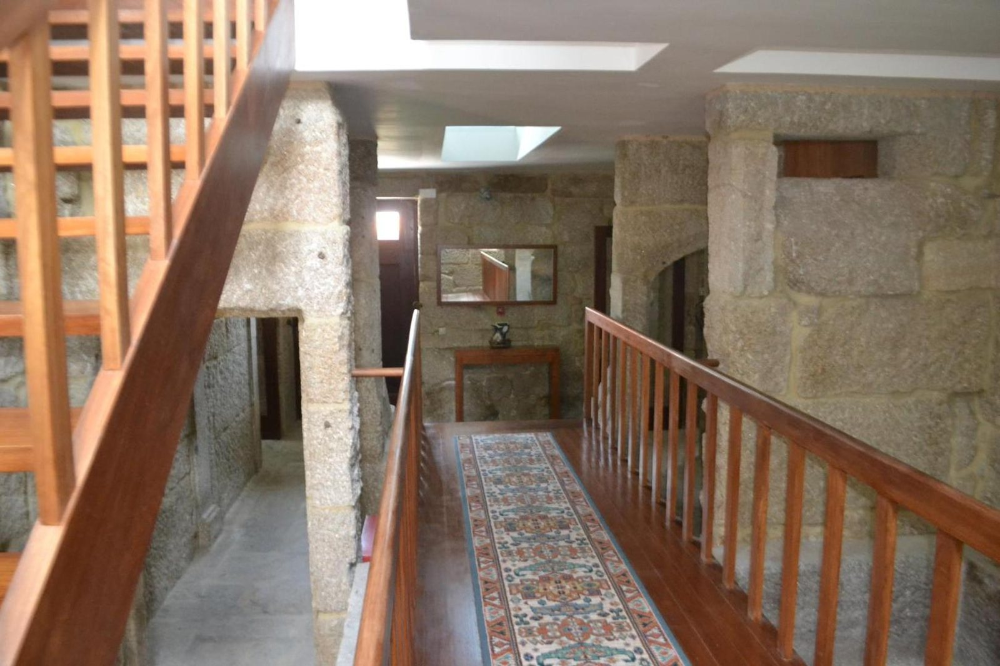
O arquiteto António Couto d'Abreu desenhou então a capela e a varanda de acesso, acrescentadas à empena leste, que passou a ser a entrada.
A cantaria foi executada à mão, com técnicas e materiais da região.
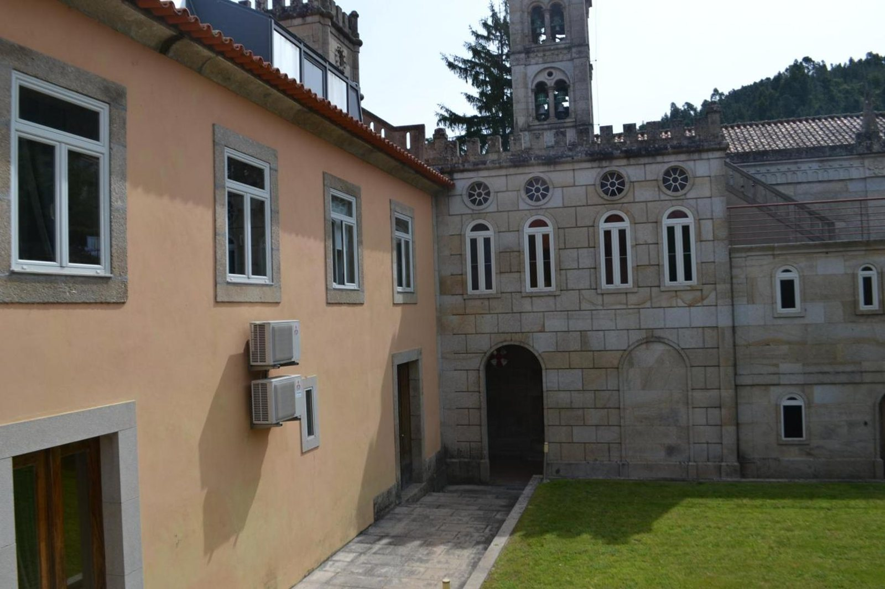
Fica na encosta virada a norte, junto à E.N. 222, a cerca de 6 km de Cinfães e 10 km de Resende.
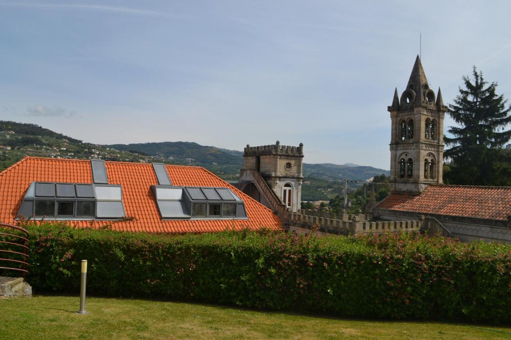
A capela
A quinta tem capela própria, reconstruída, com torre sineira e vitrais.
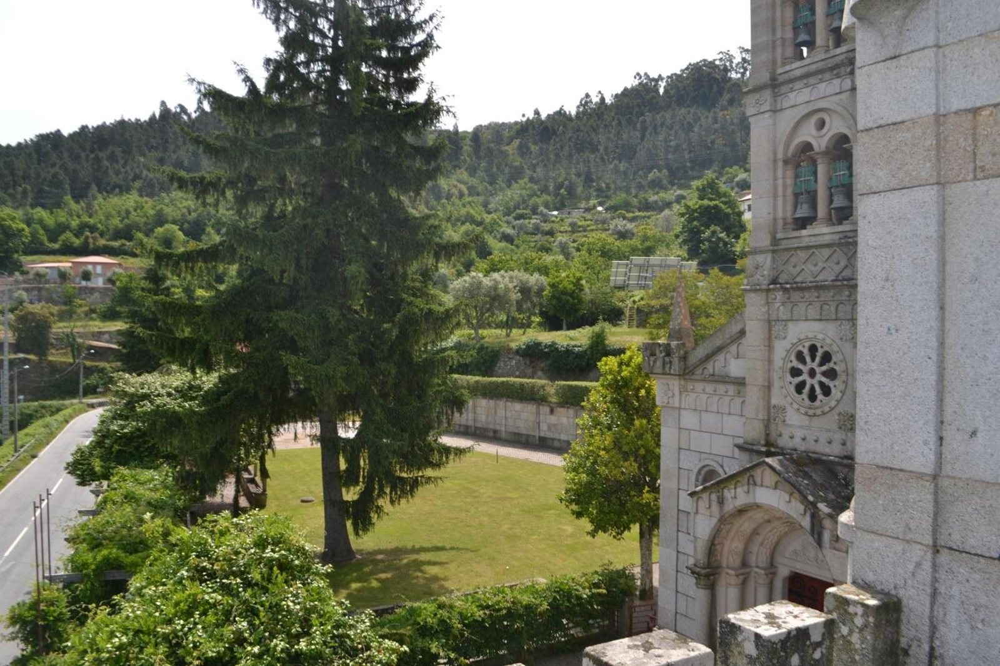
"Absolutely beautiful property, lovely setting and a beautiful conversion of an old church."
James · BookingPropriedade absolutamente linda, enquadramento adorável e uma bela conversão de uma igreja antiga.
"Mohli jsme projít cely dům a kapli."
Cyrany · BookingPudemos percorrer a casa inteira e a capela.
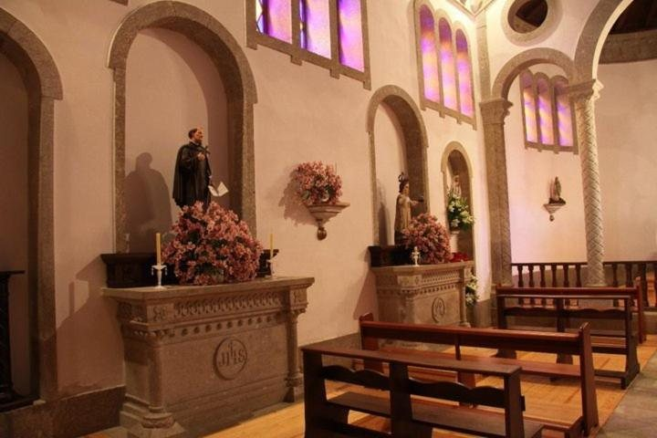
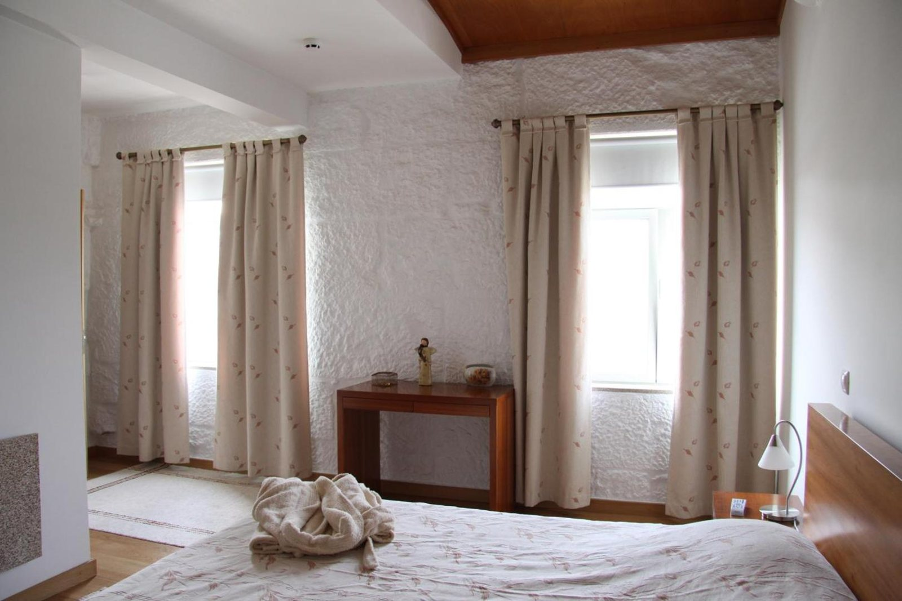
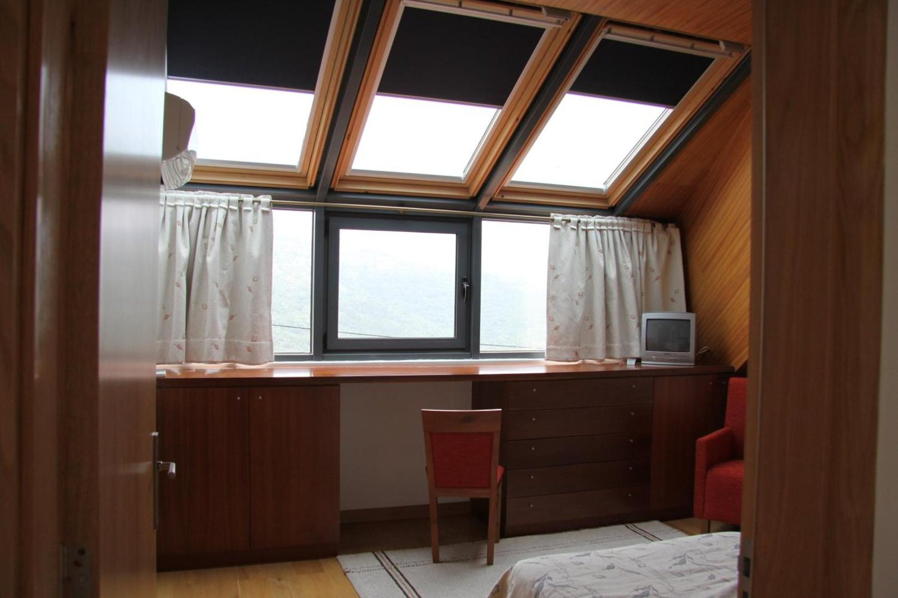
Os quartos
A casa tem 10 quartos e 20 camas: 8 quartos na casa principal e 2 na casa de pedra junto à piscina.
- SuitesHá 2 suites com cama de casal e casa de banho privativa, no primeiro andar da casa principal.
- Quartos duplosHá 6 quartos duplos com duas camas de solteiro e casa de banho privativa.
- Águas-furtadasQuatro dos quartos ficam no segundo andar, com ar condicionado, tectos panorâmicos e claraboias viradas ao vale.
- Casa de pedraJunto à piscina há uma casa de pedra independente com 2 quartos duplos com ar condicionado, casa de banho, sala com kitchenette e varanda.
Todas as estadias incluem o pequeno-almoço.
Dentro e fora
A quinta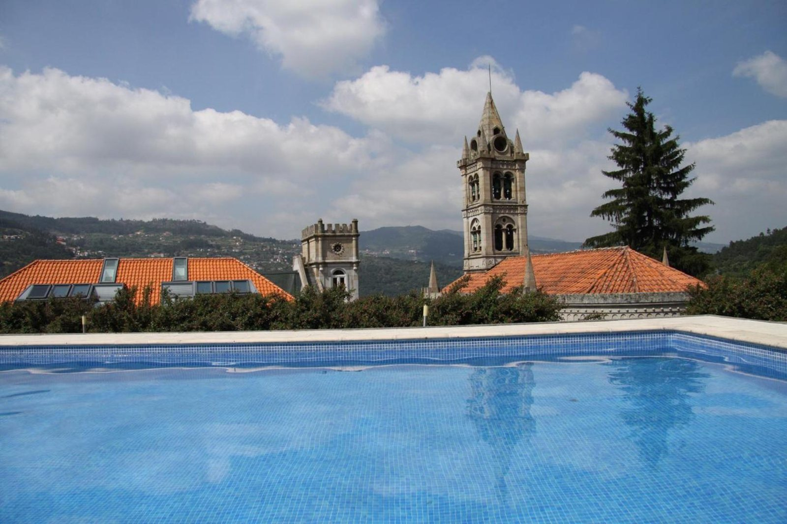
- A quinta tem piscina exterior com balneários de apoio.
- Tem court de ténis, que serve também de campo de futebol.
- Tem jardins, patamares panorâmicos com vista sobre a propriedade e sobre o rio Douro, hortas e árvores de fruto.
Dentro, os hóspedes têm à disposição salas de estar e de jantar com lareira, salão de jogos com bilhar, salão para jantares e cozinha equipada. A cozinha industrial com forno a lenha está ao dispor dos hóspedes.
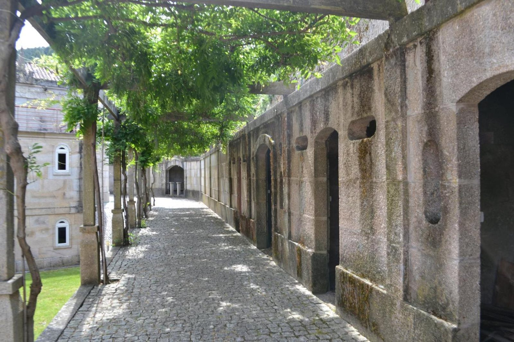
"O que mais gostei foi a envolvencia em que o alojamento se encontra, com espaços verdes e generosos, ideal para momentos de descanso."
Maria · Booking
A casa inteira
A casa principal pode ser reservada inteira, para um grupo.
"I could easily imagine a whole big extended family staying here for a wedding or reunion or group retreat."
Ann Meyer · Google MapsConseguia bem imaginar uma família grande inteira aqui para um casamento, um reencontro ou um retiro de grupo.
Quem já ficou
- 8,8em 10 no Booking, em 46 comentários
lido a 22 de setembro de 2026 - 4,4em 5 no Google Maps, em 152 críticas
lido a 22 de setembro de 2026
"Muito bem recebido pela anfitriã. Senti-me em casa."
Luis · Booking
"É um local calmo e muito sossegado, ideal para descansar e desligar do mundo."
Johnny Lino · Google Maps
"You feel like at your rich grand-parents home."
Marc L. · Google MapsSente-se como na casa dos seus avós ricos.
"Very caring and welcoming staff. They met me at a late check-in, left a late breakfast, were always in touch"
Ilya · BookingPessoal muito atencioso e acolhedor. Receberam-me num check-in tardio, deixaram um pequeno-almoço para mais tarde, estiveram sempre em contacto.
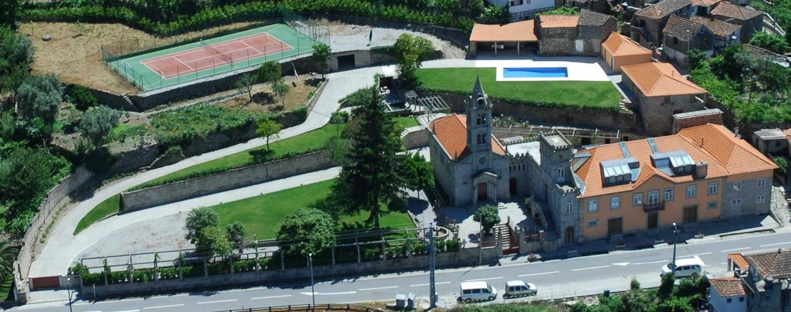
Consultar disponibilidade
A reserva faz-se por contacto direto: a casa responde a confirmar a disponibilidade.
- MoradaLugar da Calçada, Oliveira do Douro, 4690 Cinfães.
- HoráriosCheck-in das 15:00 às 20:00. Check-out até às 12:00.
- AnimaisNão são admitidos animais de estimação.
- RegistoRegisto 1375